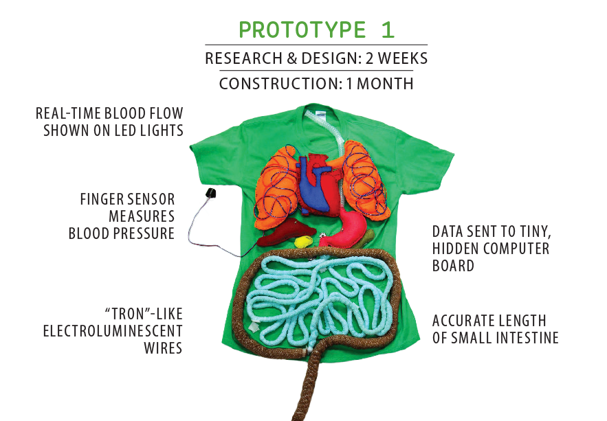

Posted on 13 Marzo , 2018 at 6:00 PM
¿En qué consisten los e-textiles?/p>
Los e-textiles son tejidos que permiten que los componentes digitales, como la batería y la luz (incluidas las computadoras pequeñas, y los componentes electrónicos estén integrados en ellos. Estas telas pueden servir, meramente como un elemento estilístico o, incluso, como una mejora del rendimiento, es decir, encontramos desde aquellas que mejoran el rendimiento a la hora de realizar deportes extremos, hasta aquellas que nos pueden proteger contra riesgos ambientales, tales como la radiación. .
¿Cuáles son sus beneficios en la educación?
Los e-textiles pueden llegar a ser muy beneficiosos en la educación, pues une dos campos que, a priori, no suelen tener mucha relación como son la programación y la moda. Se trata de hacer que los alumnos se interesen en campos que ni en sueños trabajarían, se trata de hacer ver que la programación, la electrónica también pueden ser bonitas y estar a la moda.
Con los e-textiles podemos hasta llegar a reproducir el funcionamiento del cuerpo humano.
Al utilizar los e-textiles se intenta dar valor a lo creativo y a lo tecnológico al mismo tiempo. El proceso de conocimiento de los e-textiles es el mismo que se realiza en la construcción de robots, solo que en la robótica se centran en el funcionamiento, no en la estética.
Ejemplos de e-textiles
Hay infinidad de ejemplos de e-textiles, pero nosotros nos vamos a centrar en Body Vis. Body Vis es un proyecto llevado a cabo en la Universidad de Maryland (Washington D.C.) para apoyar las habilidades de investigación científica de los niños, al mismo tiempo que van aprendiendo anatomía y fisiología.
Aquí podemos ver el prototipo de su diseño:
Este prototipo permite ver en tiempo real las acciones que va realizando nuestro cuerpo, vemos como late nuestro corazón o como se mueven nuestros pulmones, a medida que respiramos.
Una gran investigadora en este campo es Paola Guimerans, cuya tesis doctoral versa, justamente, sobre este tema. Además de ser artista y diseñadora es profesora y tecnóloga creativa. Tanto en su página web como en su Twitter @__DIY_ muestra cómo es posible una educación alternativa, inclusiva, en la que podemos aprender al mismo tiempo que somos creativos.
Desde este proyecto de investigación os animamos a salir de vuestra zona de confort, a pensar de forma diferente y sumergiros en el mundo de la tecnología desde otras perspectivas. Debemos enseñar a los más jóvenes que aprender no es aburrido y que, con un poco de imaginación podemos cambiar, de a poco, el mundo.
Bibliografía: